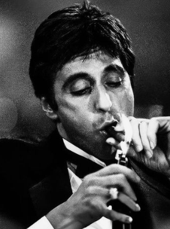

Laboratório de Desenvolvimento & Interfaces
Tenho 17 anos e atuo há 3 anos no mercado tech unindo desenvolvimento e design. Trabalho na intersecção entre engenharia de interfaces como Frontend Developer, criação visual como Designer Gráfico e mapeamento tático de talentos como Tech Recruiter.
Este ambiente. Uma interface otimizada com fundo interativo em canvas e responsividade mobile total.
HTML CSS JavaScript